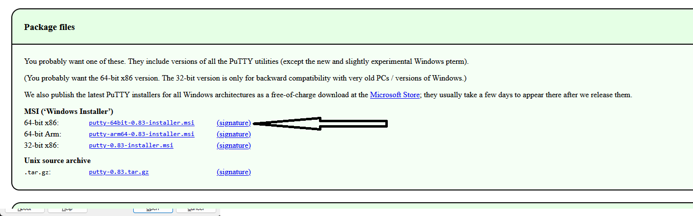
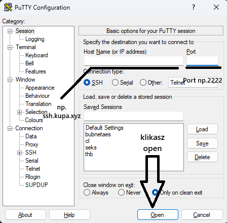

Krótki przewodnik po pobraniu i zainstalowaniu oficjalnego klienta SSH PuTTY w Windows 10 i Windows 11.
PuTTY to darmowy klient SSH i Telnet dla Windows. Do pobrania instalatora użyjesz przeglądarki; przy instalacji dla wszystkich użytkowników mogą być potrzebne uprawnienia administratora.
Linki prowadzące na zewnętrzne strony otwierają się w nowej karcie przeglądarki — ta strona z dokumentacją zostaje otwarta w dotychczasowej karcie.
putty-64bit-<wersja>-installer.msi. Jeśli masz wyłącznie 32-bitowy Windows (dziś rzadkie), użyj instalatora 32-bitowego.
.msi.PuTTY i uruchom program PuTTY (główny klient SSH).Wersja przenośna: Na tej samej stronie pobierania możesz pobrać sam plik putty.exe i uruchamiać go bez instalacji. Instalator MSI jest zwykle wygodniejszy na co dzień, bo dodaje skróty w menu Start i opcjonalne powiązania protokołów.
W oknie PuTTY w polu Host Name wpisz nazwę hosta lub adres IP serwera, w polu Port wpisz 22 (standardowy port SSH), jako typ połączenia (Connection type) wybierz SSH, następnie kliknij Open.

Po kliknięciu Open otwiera się osobne, zwykle ciemne okno konsoli (terminala).
Krok 1 — użytkownik: wpisz nazwę użytkownika i naciśnij Enter. Często najpierw zobaczysz monit w stylu login as:.
Krok 2 — hasło: wpisz hasło i znów naciśnij Enter.
Przy wpisywaniu hasła na ekranie nie widać żadnych znaków — ani liter, ani kropek, ani gwiazdek. To normalne przy SSH: wpisz całe hasło „w ciemno”, potem Enter.